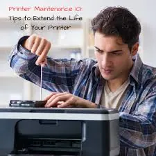

Printers
How Long Do Printers Last? Lifespan by Type and How to Extend It
Explore typical printer lifespan factors, differences between inkjet and laser models, warning signs and maintenance habits that support longer use.
Introduction: Printer Lifespan Depends on Use and Care
Each printer will have a variety of factors affecting how long it can be used for. The amount of printing done will vary significantly between a home printer printing just a few pages a month and an office printer printing hundreds of pages a day. Factors such as the design of the printer, build quality, maintenance, environment and availability of consumables and servicing will effect how long a printer can be used.
Rather than aiming for a certain number of years, it can be helpful to look at the overall condition of the printer and if it is still providing good value for money. A printer may be faulty or not provide good value due to lack of consumables, no longer being supported for security issues or repair costs being too high. It is important to understand why a printer would last a certain amount of time to ensure you are looking after it properly and know when it is time to replace it.

1. Inkjet and Laser Printers
Inkjet printers use liquid ink and have a printhead with tiny nozzles. Inkjet printers can suffer from ink drying and blockages in the nozzles if left unused for long periods. A clean cycle can sometimes resolve this issue but will use extra ink. Other parts like feed rollers and maintenance pads will also have a limited lifespan.
Laser printers use toner powder. They have various parts such as imaging drums, transfer units, fusers and feed rollers. Some parts can be replaced by the user but some need servicing. Laser printers may be able to cope with high volumes of text printing but will still depend on the duty cycle, environment and maintenance.
2. Duty Cycle and Volume
The manufacturers may give a duty cycle and suggested print volume per month. A duty cycle is usually the maximum amount that can be printed in a month and a suggested print volume will give a more realistic view.
Ensure you use a printer appropriate to your printing needs. If you consistently use a low volume home printer to print a higher volume intended for a departmental office, it can cause extra wear and may cause more issues. If you are printing a higher volume consider using a printer designed for this.
3. Environment
Ensure that your printer is kept in a clean environment. Ensure you are using a steady flat surface and allow for air flow and paper trays. Avoid placing your printer in areas that may cause issues. Avoid placing your printer where there may be spillages, cooking oil, dust from a workshop or constant knocks.
Keep your paper in a dry area and protect it until you are ready to use. If the paper is damp or curled it can cause issues with feeding. Keeping a clean environment will not guarantee no issues but will reduce unnecessary wear on parts.
4. Correct Paper and Consumables
Ensure you are using the correct size, weight and type of paper. Ensure your paper trays are not overloaded and the guides are adjusted so that your paper sits firmly in place without any bending. Remove any damaged paper and don’t mix media types unless your printer allows.
Ensure you are using the correct ink/toner for your exact model. Using incorrect or low quality ink can cause leaks, recognition issues, inconsistent prints and damage. Keep your unused cartridges in their original packaging. Don’t overstock as you may not be able to use all of them. This also affects how practical an older printer can be.
5. Keep Clean
Wipe the outside of your printer with a soft lint free cloth. Follow the instructions in your manual to clean any rollers, glass and other parts that can be cleaned by the user. Follow the cleaning instructions if your printer has specific instructions. Don’t spray any liquid inside your printer. Don’t use any domestic solvents inside your printer.
Only clean your inkjet printhead if you have an issue with the nozzles (as indicated by a nozzle check). If you clean frequently you’ll waste ink and will fill up your maintenance pad. Laser printers have sensitive imaging parts and may have hot parts. Don’t touch the drum or open up sealed units. If there is a lot of dust inside your printer you may want to get it professionally cleaned.
6. Don’t Overload
Too many paper jams can cause wear on your feed rollers. Ensure you are using the correct paper for your printer, ensure it is loaded correctly and don’t force the paper in. If you have a paper jam follow the instructions from the manufacturer to remove the paper in the correct direction. Don’t pull too hard and don’t use sharp objects.
If you are having regular paper jams in the same area have it looked at. There may be an issue with your rollers, sensors or paper guides. If you force the paper through it can cause a small issue to become a larger and more expensive fix.
7. Firmware and Drivers
Keeping your software updated can help keep your printer compatible with your current computers and network. Check the manufacturers official website for drivers and firmware updates for your exact model. Follow the instructions for installing these. Don’t use non-official driver tools.
If your printer is connected to a network it is important to ensure it is still supported for security. Change any default admin details if possible and ensure it is on a secure network. Check what support the manufacturer provide. If your printer is still printing but isn’t receiving important security updates it may be time to replace it in a business environment.
8. Signs of Ageing
Your printer may be reaching the end of it’s life if it is causing lots of feeding issues, making noise, giving inconsistent prints, lots of service alerts and repair costs are increasing. Just because it is having one issue doesn’t mean you need to replace it but if there are regular issues it is worth noting.
Keep a log of any repairs, maintenance parts and consumable costs. If you are having regular issues with the same printer compare the total cost of repairs to a new printer with similar capacity and better support. Consider how much downtime you are getting and how much time staff are spending trying to fix issues.
9. Worth Repairing
It can be worth repairing your printer if it is generally a good printer, there is only one issue and parts are available at a reasonable cost. Replacing a roller, cartridge or other part may give you a reliable printer again. Get a written quote and ask if any other parts are likely to need replacing soon.
Check that consumables are still available for your older printer. If it is cheap to repair but you can’t get consumables for it then it won’t be useful for long. Compare the repair quote to the price and running costs of a suitable replacement.
10. Simple Maintenance
Simple maintenance can include checking your paper, wiping the outside of your printer, checking your prints, dealing with error messages and following the manufacturers maintenance schedule. Keep your printer manual and part numbers to hand. In a shared office set someone to report regular issues and order consumables.
Don’t unnecessarily clean your printer or open it up if the manufacturer do not recommend it. Ensure you are carrying out the correct maintenance for your model. It is more useful to take care when using your printer and repair issues when they arise.

Conclusion
How long your printer lasts will depend on the workload, design, environment, consumables, maintenance and support. Inkjet and laser printers will have different wear but keeping the correct paper, using the correct consumables and taking care with your printer will help. If you are having regular issues and repair costs are increasing it may be time to replace it. With good maintenance your printer can last a long time but no printer will last forever..
Need a hand with your printer or laptop?
Printerworld sells printers, laptops and genuine supplies, and repairs and services both. Bring in your model number and we will help you get it right.